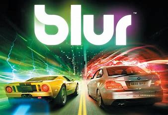
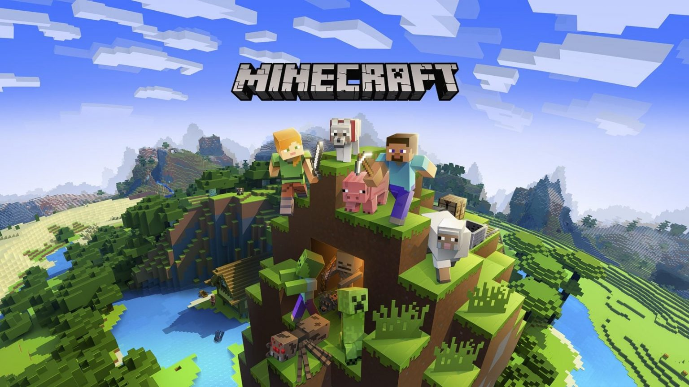
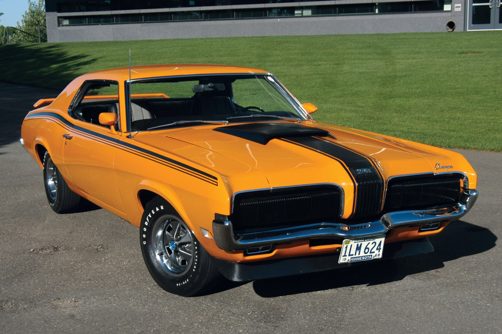
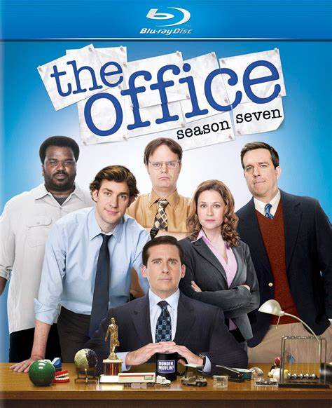
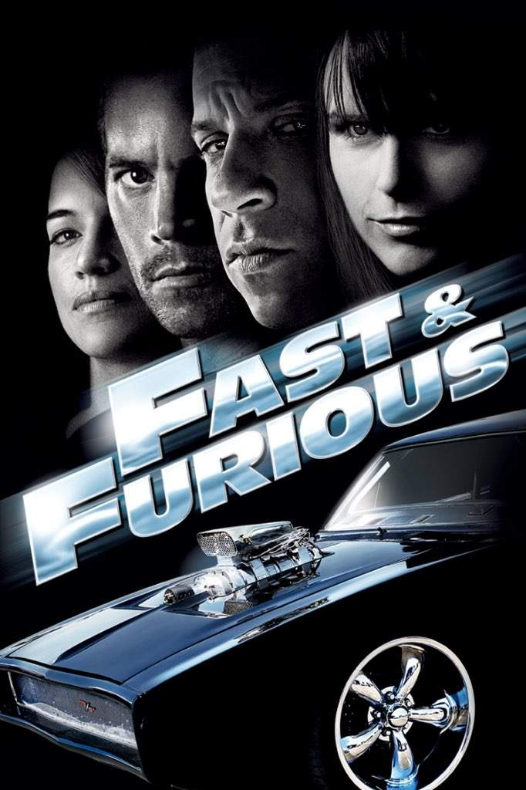
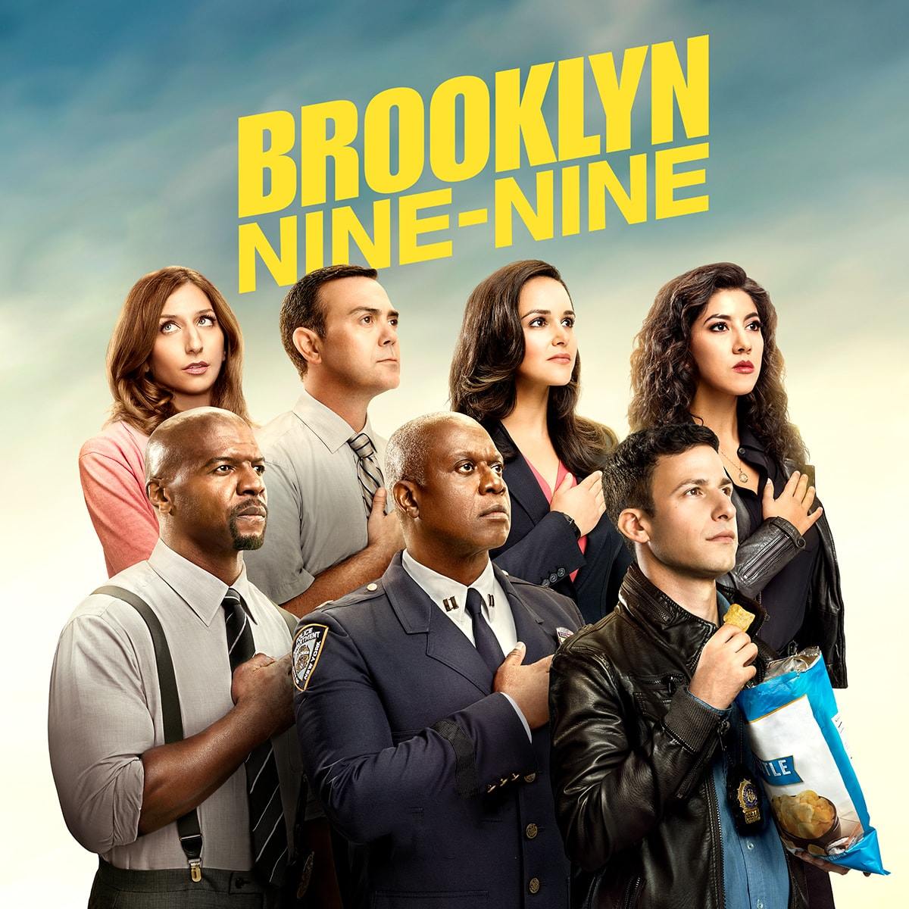
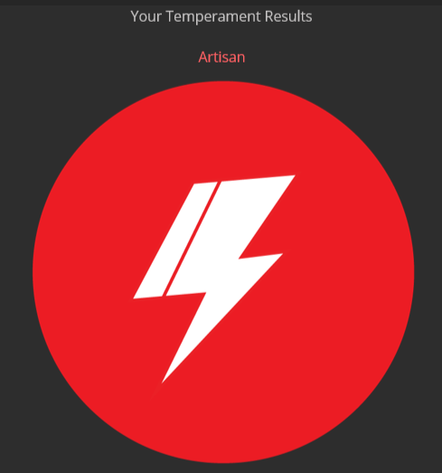
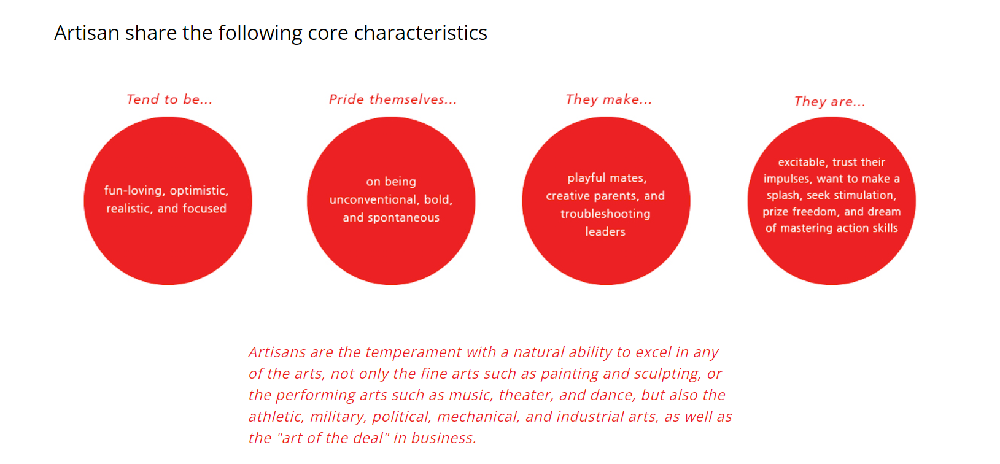

"He that walketh with wise men shall be wise: But a companion of fools shall be destroyed." Proverbs 13:20 , This is a quote from the bible which is often times used by a close friend of mine.








The results of personality test were very accurate it describe my personality type to be that of an artisan. Artisan are said to be optomistic , realistic , focused , spontaneous and creative which i beleive really discribes my personality.